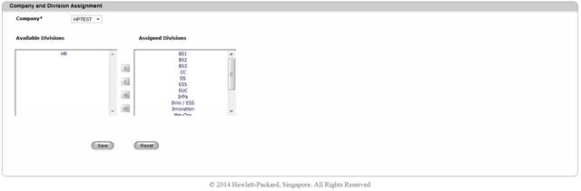
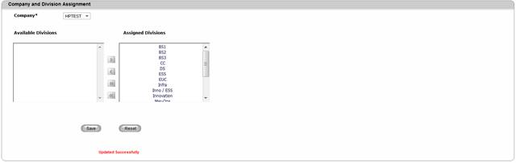

To create a Company – Division assignment,
6. Navigate Assignment>>Company and Division assignment on the DCTrackMobileWeb menu bar.
You will see the Company and Division assignment screen.
7. You will see the list of assigned and Unassigned Divisions in their corresponding text boxes.

Figure 116: Company and Division Assignment Screen
8. Select a Division from the Available Divisions list.
Can I select multiple Divisions for assignment?
Yes. Press [Ctrl] key on your keyboard while selecting different divisions.
9. Click to move the selected division(s) to the Assigned divisions list.
10. Click Save button to complete the assignment process or else click Reset button to refresh the page fields
You will see the successful assignment message.

Figure 117: Company and Division Assignment Screen – Successful Assignment
Can I move all divisions to Assigned Divisions?
Yes. Just click icon to move all available divisions to Assigned divisions list.
|
Copyright © 2019 Hewlett
Packard Enterprise,v5.2.
|